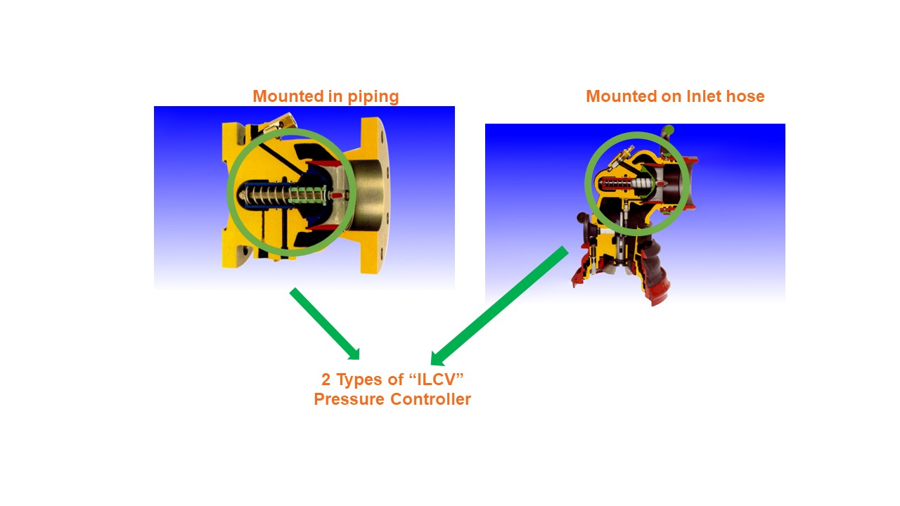
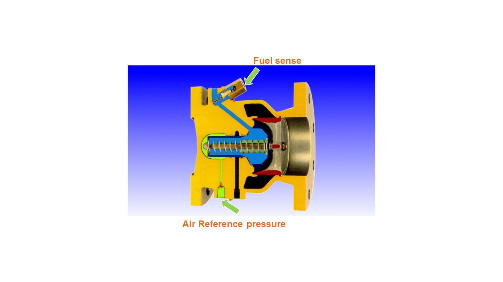
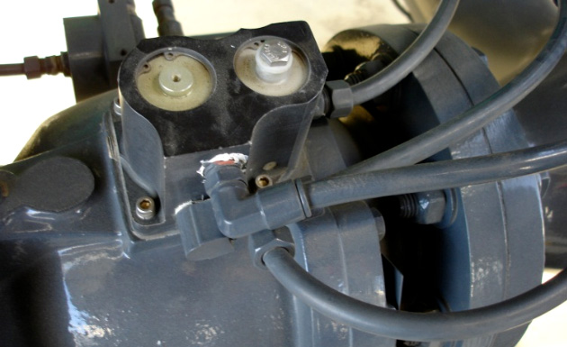
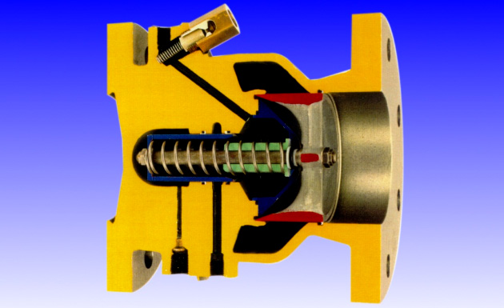
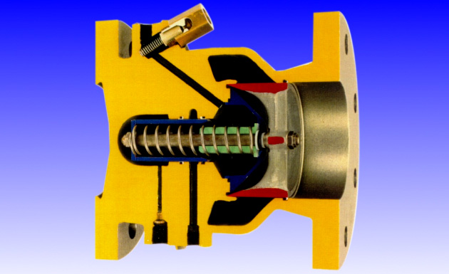
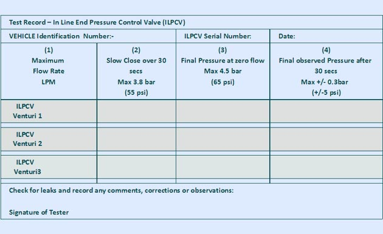

Session 15.17
Testing
15.17.1 ILP CVs Bias

- ILPCV is normally closed
- Operating piston balanced between spring force + fuel sense pressure and air reference pressure
- Controlling pressure adjusted by adjusting air reference pressure
- ILPCV has a spring of a specified tension to provide positive shut-off (usually 15 or 25 psi)
- ILPCV is pneumatically operated; the initial air pressure applied to overcome the spring resistance before the valve can be opened is termed the BIAS of the ILPCV.
- If a control pressure of 55 psi is desired and the bias for the valve is 15 psi, the required air pressure will be 55+15 = 70 psi and
- If a control pressure of 55 psi is desired and the bias for the valve is 15 psi, the required air pressure will be 55+15 = 70 psi and
- This required air pressure for setting the control pressure is referred to as the Air Reference Pressure
- “Bias" which is provided by a Spring and represents the spring resistance which the Air Reference Pressure has to overcome to obtain the desired control pressure
15.17.2 ILP CVs Bias and Air Reference Pressure

- ILPCV is set at 55 psi usually, which is within the aircraft manufacturers’ design tolerance of 10% of the 50 psi maximum steady flow pressure at the aircraft fuelling adapter
- ILPCV is set 10 psi higher than the HEPCV, i.e. 55 psi (45 + 10).
- An adjustment LOWER than 10 psi could result in pulsation between the two (2) valves and should be avoided
- ILPCV is set at a pressure = 45 + 10 + Bias
15.17.3 ILPCV Settings



- General
- After HECV tests, return air reference pressure to previous setting and seal
- Connect hoses for maximum flow conditions
15.17.4 Pressure Control Tests - ILCV
- Disabling of HECV’s
- All the HECVs must be disabled by insertion of the block out devices
- Selection of Venturi
- If fuelling unit has more than one venturi, correct venturi shall be selected
- Pressure control tests must be carried out separately for each venturi
- Ensure reference air setting is at normal position
- Select an ILPCV, activate all appropriate nozzles downstream and open relevant test rig valves. Normally there is only one ILPCV,so select the set of nozzles that would give the highest flow rate – that is, the deck hose nozzles deployed together
- Install block-out devices on HEPCV nozzles in use
- Stow other hoses not in use
- Establish full flow with deadman and Record Max Flow rate achieved.
- Slowly (over 30 secs) close the test rig valve until minimum flow of about 100 lpm or ~25 USGPM is obtained, observing control pressure from the test rig manifold gauge. Record pressure The ILPCV should control pressure smoothly over the closure. Any unusal pressure fluctuation shall be investigated.
- Fully close test rig valve and observe final pressure on test rig gauge and record the pressure
- CREEP TEST - Wait for 30 secs and observe any increase in pressure. Record final Pressure
- final pressure increases after closure of the test rig valve over approximately 30 seconds period should not be by more than 5 psi (0.35 bar)
- Increase in pressure of more than 5 psi (0.35 bar) is an indication that the seals in the unit under test may have failed
- Shutdown operation and relieve any locked-in pressure by opening test rig ball valve Repeat steps 2-9 for any remaining ILPCV and/or Venturi configurations
- If any ILPCV exceeds the specified limits adjust/overhaul and retest until within limits
- Record final air reference pressure (and note any changes made) and seal adjustment control 
15.17.4 Pressure Control Tests